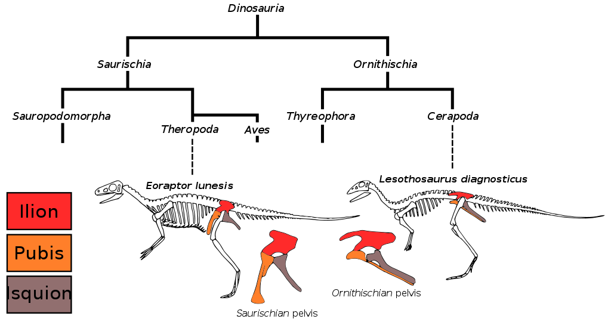
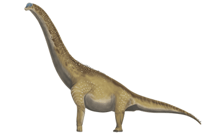
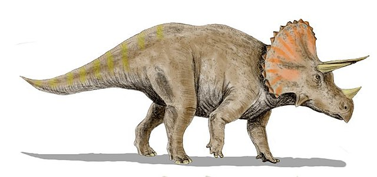

Saurischia y Ornithischia

Informe sobre Saurisquios (Saurischia)
Introducción
Los saurisquios son un grupo de dinosaurios que se caracterizan por tener una cadera similar a la de los reptiles modernos. Esta característica distintiva los diferencia de los ornitisquios, otro grupo de dinosaurios que poseen una cadera más parecida a la de las aves. Los saurisquios se dividen principalmente en dos subgrupos: terópodos y sauropodomorfos. Este informe proporcionará una visión general de estos subgrupos, así como algunos ejemplos representativos de cada uno.
Terópodos:
Los terópodos son un grupo diverso de dinosaurios carnívoros que incluyen algunas de las especies más famosas, como el Tyrannosaurus rex y el Velociraptor. Estos dinosaurios se caracterizan por sus cráneos alargados, dientes afilados y garras curvas en las extremidades anteriores. Muchos terópodos eran bípedos ágiles y depredadores activos, aunque también hay ejemplos de terópodos que se adaptaron a una dieta más omnívora o incluso herbívora.
.jpeg)
Imagen Completa
Ejemplos de terópodos:
- Tyrannosaurus rex: Uno de los mayores y más temibles depredadores terrestres conocidos. Vivía durante el período Cretácico en lo que ahora es América del Norte.
-
Velociraptor: Conocido por su aparición en la serie de películas "Jurassic Park", el Velociraptor era un depredador ágil y inteligente que habitaba en Asia durante el período Cretácico.
-
Allosaurus: Un depredador terópodo grande y poderoso que vivió durante el período Jurásico en lo que ahora es América del Norte, Europa y África.
Sauropodomorfos:
Los sauropodomorfos son un grupo de dinosaurios herbívoros con cuellos largos, cuerpos masivos y patas columnares. Son conocidos por ser algunos de los animales terrestres más grandes que han existido. Aunque su tamaño y estructura corporal varían, todos comparten ciertas características distintivas, como cabezas pequeñas en relación con el cuerpo y dientes adaptados para el consumo de plantas.

Ejemplos de sauropodomorfos:
-
Brachiosaurus: Conocido por su distintivo cuello largo y su gran tamaño, el Brachiosaurus vivió durante el período Jurásico en lo que ahora es América del Norte.
-
Apatosaurus: Anteriormente conocido como Brontosaurus, el Apatosaurus era otro gigante herbívoro del período Jurásico que habitaba en lo que ahora es América del Norte.
-
Diplodocus: Con un cuerpo largo y delgado y una cola extremadamente larga, el Diplodocus es uno de los dinosaurios saurópodos más reconocibles. Vivió durante el período Jurásico en lo que ahora es América del Norte.
Informe sobre Ornitisquios (Ornithischia)
Introducción
Los ornitisquios son un grupo diverso de dinosaurios que se caracterizan por tener una estructura de cadera que se asemeja más a la de las aves modernas que a la de los reptiles. Esta característica distintiva los diferencia de los saurisquios, otro grupo de dinosaurios con una cadera más similar a la de los reptiles. Los ornitisquios incluyen una amplia variedad de formas y tamaños, desde pequeños herbívoros bípedos hasta grandes herbívoros cuadrúpedos con armaduras óseas.
Ornitisquios bípedos:
Algunos ornitisquios eran bípedos, lo que significa que caminaban sobre dos patas. Estos dinosaurios eran generalmente herbívoros y tenían cráneos y mandíbulas adaptados para comer plantas.

Ejemplos de ornitisquios bípedos:
- Iguanodon: Un herbívoro bípedo con un pico de loro en la parte delantera de su mandíbula y un pulgar en forma de púa que probablemente usaba para defenderse de los depredadores. Vivió durante el período Cretácico.
-
Heterodontosaurus: Un pequeño dinosaurio herbívoro con dientes distintivamente diferentes en su mandíbula, que sugieren una dieta variada. Vivió durante el período Jurásico.
- Stegosaurus: Aunque conocido principalmente por sus características placas óseas y espinas, Stegosaurus era un dinosaurio bípedo cuando se desplazaba a alta velocidad. Sin embargo, se cree que caminaba principalmente sobre cuatro patas.
Ornitisquios cuadrúpedos:
Muchos ornitisquios eran cuadrúpedos, lo que significa que caminaban sobre cuatro patas. Estos dinosaurios solían ser herbívoros y tenían cráneos y mandíbulas especializadas para alimentarse de plantas.

Ejemplos de ornitisquios cuadrúpedos:
- Triceratops: Conocido por sus tres cuernos distintivos en la cabeza y un gran volante óseo en la parte posterior del cráneo, el Triceratops era un herbívoro grande y poderoso que vivió durante el período Cretácico.
-
Stegosaurus: Caracterizado por sus placas óseas en la espalda y sus espinas distintivas en la cola, el Stegosaurus era un herbívoro grande y pesado que vivió durante el período Jurásico.
-
Ankylosaurus: Con una armadura ósea pesada y un mazo óseo en la cola, el Ankylosaurus era un herbívoro blindado que vivió durante el período Cretácico.